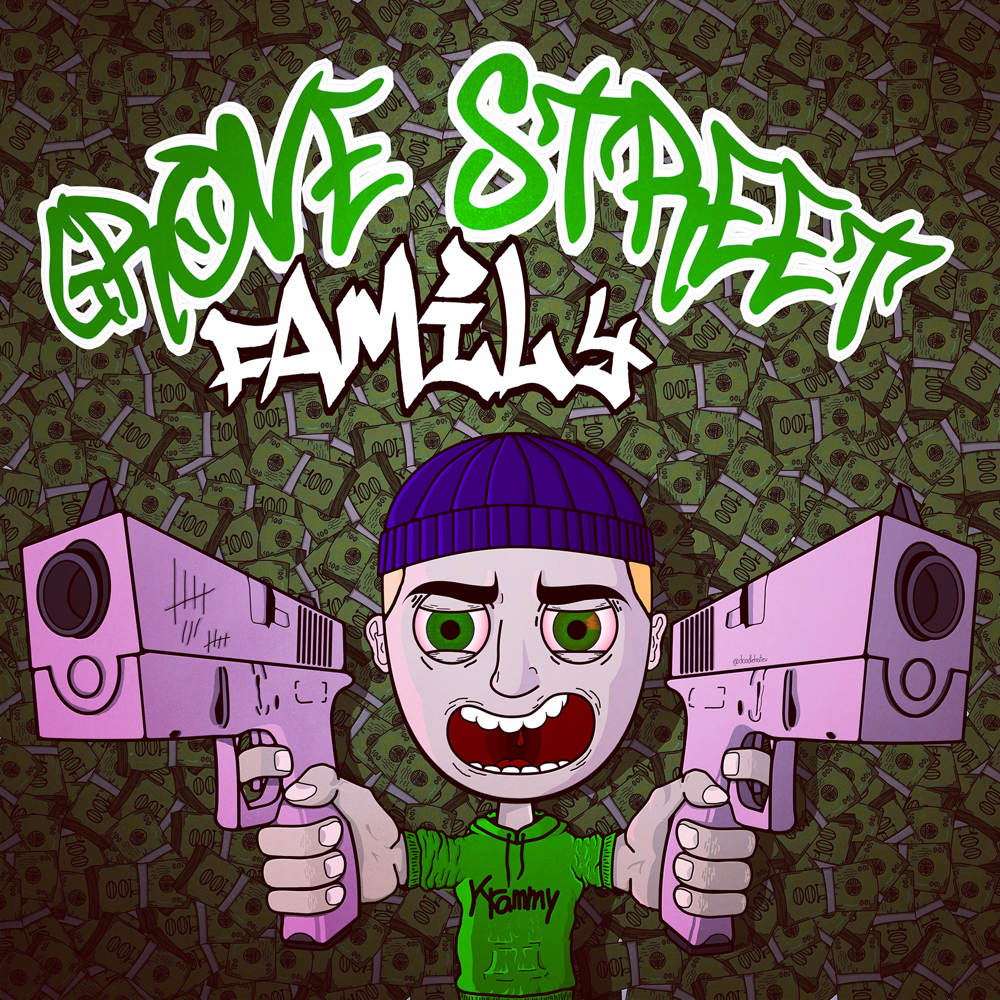
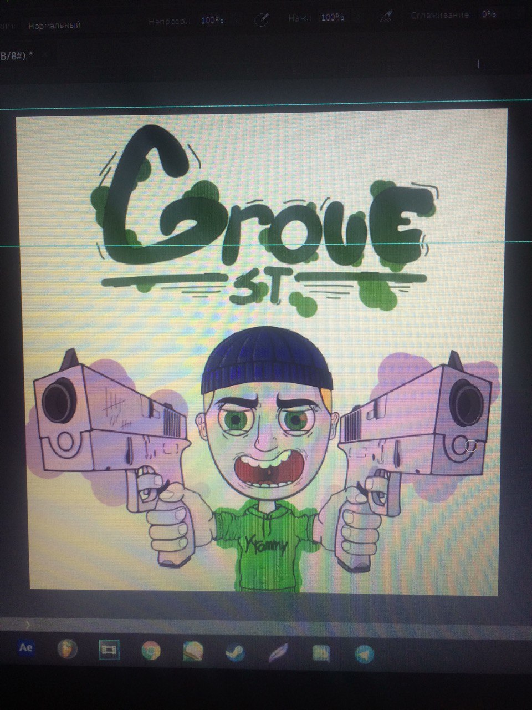
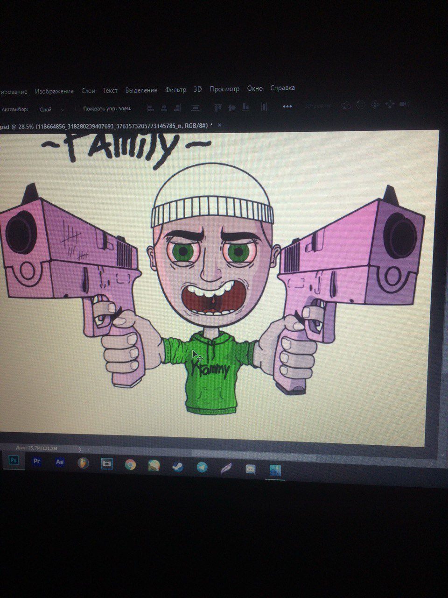
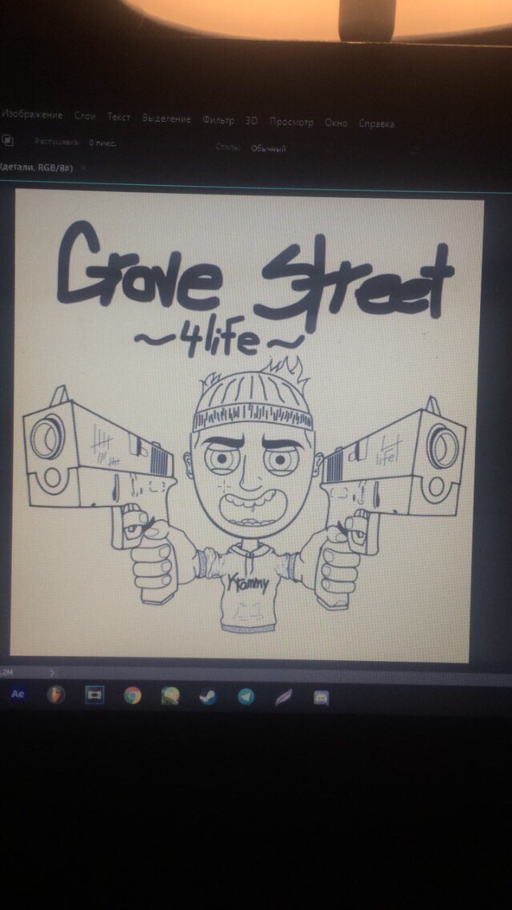

The task was to create a cover for a music artist. The process was lengthy and meticulous, and I approached the assignment with great seriousness, paying careful attention to detail. This marked my inaugural venture into this particular style, and what compounded the complexity was the absence of a graphics tablet; consequently, the entire work was executed using a mouse. The progress of the project is visible in the attached photos. I believe this to be my most accomplished piece in 2D art, as I invested considerable effort and take pride in the final outcome.